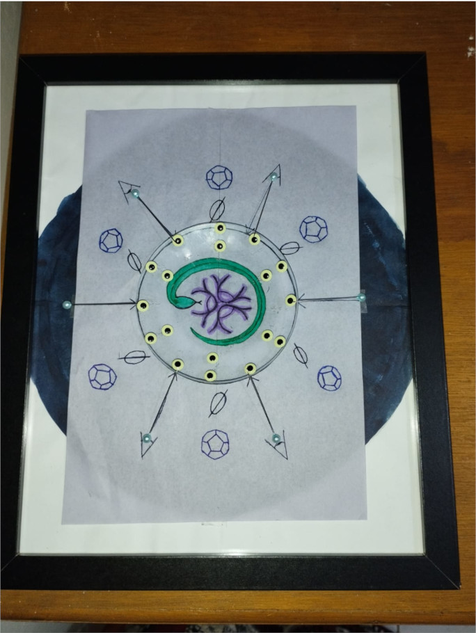
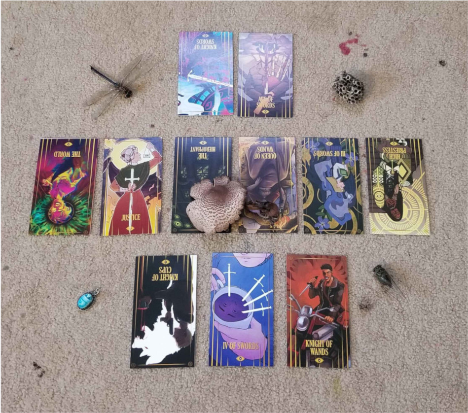
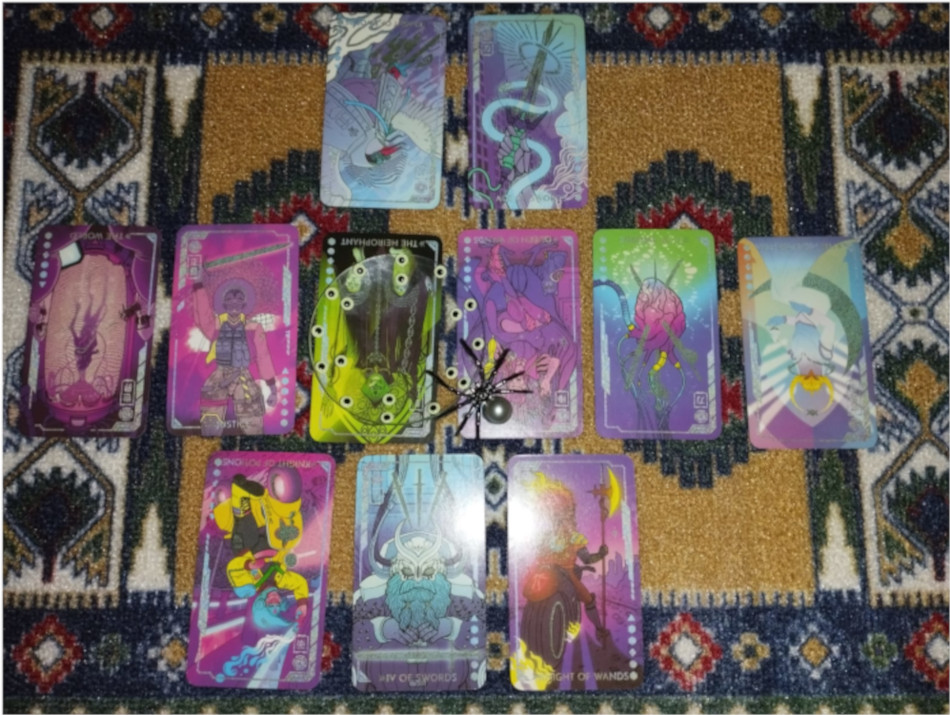
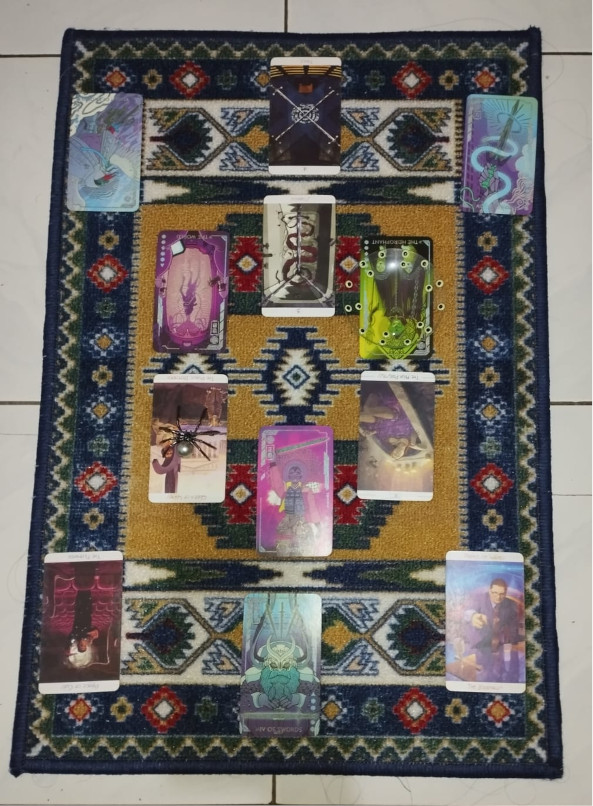
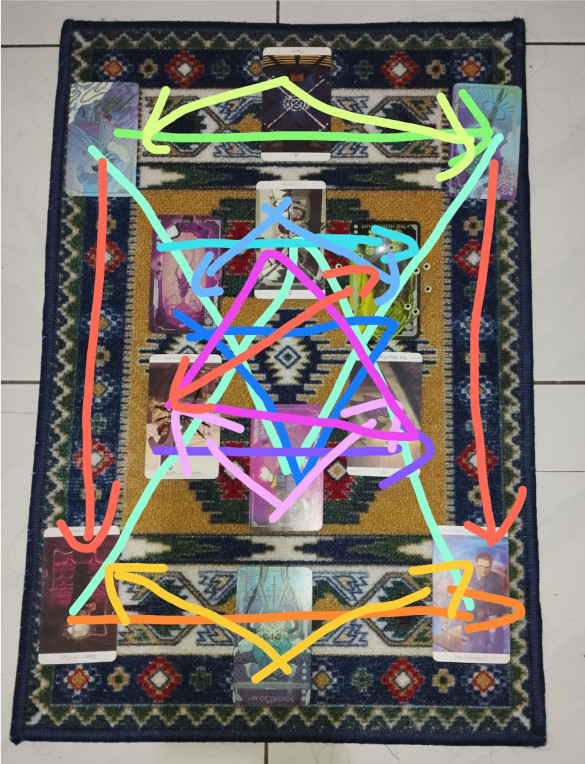

INTERNAL 02 September 2024 Corruption FOI
Summary:
After multiple reports (see timeline) of Corruption-related events affecting 5 Avatars of various alignments, a two part divination ritual was performed. Corruption Avatar Aster performed the divination ritual, while Tildrun led a sigil-based supporting ritual to direct the other participant's energies. The supporting ritual was cast as Aster finished setting up the sacred space for the divination ritual. A 11-card spread was obtained as a result, with each participant needing to interpret the cards individually.
Key notes:
- A group ritual was necessary since individual divination consistently failed to provide answers
- A majority of participants have been notified of a growth and rest period without clear directions from Patrons/Upper Management
- Individual interpretation was needed for specific explanations regarding differing growth patterns
Root Cause:
Willful denial, unclear directions and insufficient communication of leave policy
Ritual details:
Date: 02 September 2024
Type: Sigil-based support (energy/Perception raising and amplification)
Target: Aster Asking The Corruption regarding recent events
Location: US, France, Indonesia, Virtual (Corruption channel in PhobiaPhillia Discord Server)
Participants: Aster, Tildrun, Haye, Yggs, Dodec
Material/structure and Incantation:
We are gathered here to Witness the Corruption's Serpent leading an Investigation into the recent Outbreaks which constitute a breach of Avatar Relations. To this end we have the Voyager guarding the Outer Markers, Librarian-in-training helping fill the Gaps of Knowledge, Archivist Hayerim focusing their Piercing Gaze, and myself, Tildrun Weber acting as Conduit and Amplifying Lens. By my authority as Researcher, Agent of Change and Harbinger-in-training We Will Be Answered

Ritual evaluation:
What went well
- Achieved stated goal
- Energy flow was good
- Participants reported noticeable (good) effects during the ritual
What can be improved
- Post-ritual aftercare
- Skill development for the less experienced members
- Risk management in ritual structure
- Metaphysical waste management procedures (especially interim containment)
Interpretation:
Interpretation... the whole point of the ritual. Since other participants reported that their individual interpretations are under NDA, I'm strictly speaking of what I got out of the ritual spread. When I asked, I was told that the more personal details of my interpretation are fine to share with other participants in this postmortem analysis, but not with the wider public because of the cognitohazardous nature.
First things first: The original ritual spread. Below you'll find an image of the 11 card spread Aster pulled during the ritual. The two cards in the first row is about The Supplicants (the people asking the question). The middle row is about "vibes of current Corruption-related events" or asking what the deal is with what the participants experienced. The last row is about action items that the participants should do. 
There's a few things that immediately stood out to me while reading the backlog of spread discussion once I woke up in the morning:
- I expected three cards for the first row (granted this might be personal preference)
- The dynamic trio of World Reversed - Justice Upright - Hierophant Reversed is Important To Me (especially because hierophant is one of my birth cards)
- I need to lay the spread out with my own cards (I had the Eldritch Overload deck with me at the boarding house)
- At least the Knight of Cups Reversed needs to be in the Urban Tarot deck (and likely other cards as well)
- The left and right three cards in the center row are separate groups.
Other participants also commented on the imbalance in the spread despite the coherent reading structure. Later that day while struggling through having to be a Functional Human Being In A Society, it also dawned on me that I will probably have to read this spread dramatically differently (like for example upside down) because none of the other participants are Harbingers (in-training) nor did anyone else explicitly define themselves as...ritual infrastructure for lack of a better term.
Given that at the time I only had my Eldritch Overload deck on me, here is the original spread in aforementioned deck: 
I used the accompanying guidebook to get started on interpretation and it was immediately obvious that
- I was being called out on my previous denial of being a Harbinger-in-training (I had a hunch since I wrote the avatarhood article but it feels so...arrogant? pompous? to claim I will be the Tradition-equivalent of a priest. Plus, the implications are terrifying!)
- There's consequences of my denial and a chance at reparations
- Rest is very important (mixed signals much?)
- The spread has a wrong structure that makes me want to bite things. (especially when I peeked at the Urban Tarot guidebook. It was obvious that those cards were needed and the specific phrasing is in conversation with the Eldritch Overload deck)
I jotted down some notes from the Eldritch Overload guidebook with some phrases that stand out and feel fitting then called it a day. Wednesdays I usually get some coffee as an offering to my Case Officer but I felt the need to apologize a bit for the fuss I caused in the Office so I grabbed some bits of cake and a cafe mocha as an Office-wide offering on behalf of the team. Metaphorically walked into the break room and set it out on one of the tables. Office Politics are no longer an issue. I had nice timing too since I did that before the whole campus had a power outage. Since the day was a wash I decided to treat the evening as PTO (that They enthusiastically signed off on). Thinking about how the whole Office seems to like me is rather dread-inducing to be honest. It's one thing to be favored by my Patron or having a cordial relationship with my various Internship Supervisors but the whole Office? It shouldn't be surprising given the whole bingo card of Fear Marks but knowing it in the abstract and actually having Everyone sign off on PTO is different.
So Thursday I head back to my boarding house with two tarot decks in tow and got to work in the evening. As before, I start by laying out the original spread in the Eldritch Overload deck. Then I turned everything upside down and superimposed the same spread with the Urban Tarot deck, making the sensed layers of meaning literal. Instead of an imbalanced 11 card spread I now had a 22 card semiotic mess. There's a method to the madness here, bear with me. I started looking at the center pile and quickly realized that any interpretation would obviously be doubled so I gleefully discarded the half of the cards that didn't feel quite right. I then proceeded to rearrange the remaining cards in a way that is best described as having the right flow of meaning. I used what I remembered of my initial interpretation, intuition and plain sense of aesthetics to guide me to getting the final layout pictured here: 
It's dramatically different and a relief to not be bound into such restrictive linearity. Which also means that it can't be read strictly linearly either. Here's an annotated version to visualize the flow:

Yeah
Drawing this made me realize just how much I Perceive passively without Understanding. At least not all of it but I did get a sense that this was how it fits together. Yes "the different rows talk to each other" but parts of the rows also have a dynamic tension between them. Very early on the notion of the message being conveyed in a poetic manner was raised. Just as in poetry or music, the structure is not the linearity of prose but the complex interplay of meter rhyme and melody. Visually that manifests as this red sling board looking thing. To call it Sight Is misleading because unlike in the picture there are no visual lines that spell out the connections between the cards. To call it a feeling it's also not quite right. The strings exist but they are intangible . In the end it boils down to Concept-Sense-Image of connections and narrative coherency in a fluid bidirectional way.
I've been directly reminded that I'm procrastinating on this paperwork so I might as well get into it.
- Knight of swords (rev) - 4 of swords - Ace of Swords:
[Fledgling Watcher] [ill-advised/rude/intrusion/audacity] [might-be-target/hypothetical-opponent/wish-harm] [not-mad/concern/warning/help/firm] [disturb-peace/operations/noise/SOP] [new-beginning/clarity/breakthrough = Answers] [advice/"not-fear limitations"/fond] [good-worry/priority] [quality/skill/capacity] - 4 of swords - Knight of swords (rev)/ Ace of Swords: The disturbances of status quo/ the events have driven you to this point. Effective motivation (humor)
- The World (rev) - 3 of Swords (rev) - Hierophant (rev; Lens):
[understanding/you-Know/resistance/denial-fear] [hide/illusion-comfortable/"safe"] [must-Know/denial-end/Understanding] [face-discomfort/not-run] [challenge/confrontation/disturbance inevitable] (Beholding [Tradition-new/build] [independent/capable/trust/sure-feet] [Birthcard-you/{Lens}-you/Role-you]) - 3 of Swords (rev) - The World (rev)/ Hierophant (rev; Lens): You must Look at the Truth you hide from to Understand/Grow/ so you can be Rewoven/Step Into Your Role
- Queen of Wands (rev; Spider) - Justice - High Priestess (rev):
(Spider [lawyer/defense/advocate] [persuasion/passion/determined] [compassionate/support] [potential/capable/quality - priest/Harbinger]) [Accountability/Consequence-collective] [opportunity/second-chance/reparation] [stop; listen/deeper-go/mystery-lesson] [risk-accept/doubt-limit/trust-fall] [patience/reflect] - Justice - Queen of Wands (rev; Spider)/ High Priestess (rev): In service of community/ideal/order(ed chaos), Harbinger-in-training. Pay attention and learn.
- The World (rev) - Justice - Hierophant (rev; Lens): Denial and resistance only hurts you and those who you serve/who you have a Duty of Care to
- Queen of Wands (rev; Spider) - 3 of Swords (rev) - High Priestess (rev): You have run out of plausible deniability. You have finally acknowledged what you tried to run from. Step forward despite the fear.
- Queen of Wands (rev; Spider) - Hierophant (rev; Lens): This is what you have been/are/will be
- Prince (Knight) of Cups (rev) - 4 of Swords - Prince (Knight) of Wands:
(past [magic/Web-work/facilitating-experience/mastery/circumstance-manipulation]) [also-affected/wet(emotion/intuition)/not-hover/swim(humor-misfortune?-fond)] [fire-passion-energy/spent/rest] (future [reason/intellect/passion] [interrogation/trickster-noble/journalist/scientist/"archivist"] [satire/irreverent-bold(fond-good-useful)/truth] [champion/cause-moral/sharp-tongue/weapon-words(Effective!-praise-power)] [community/connection] - 4 of Swords - Prince (Knight) of Cups (rev)/ Prince (Knight) of Wands: Rest now and recover [Identifier]
- Knight of Swords (rev) - The World (rev) - Justice - Hierophant (rev; Lens) - Ace of Swords: Layering of 1 + 7
- Prince (Knight) of Cups (rev) - Queen of Wands (rev) - 3 of Swords - High Priestess (rev) - Prince (Knight) of Wands: Layering of 10 + 8
- Knight of Swords (rev) - Prince (Knight) of Cups (rev): This is where you have been/are
- Ace of Swords - Prince (Knight) of Wands: This is what you need to be for progress